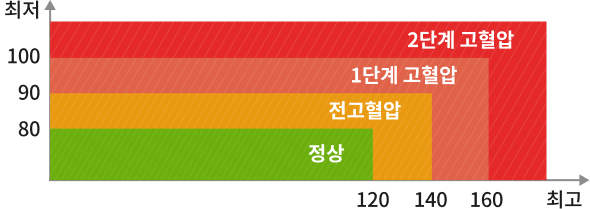

양천구
구립목2동 용왕경로당
2023.07.24 10:56
홍*동님
로그아웃
태블릿 세팅
처음으로
종합결과 안내
혈압
저혈압
체중
표준
체지방
높음
내장지방
높음
나이 (성별)
70세 (남)
키
165.0 cm
혈압
최고/최저
120/80 mmHg
심박수
70 bpm
저혈압
혈압수치별 분류

체중
표준범위 : 50.90 ~ 68.90kg
70.30
낮음
표준
높음
체지방량(kg)
표준범위 : 5.00 ~ 13.00kg
4.5
낮음
표준
높음
근육량
표준범위 : 43.33 ~ 52.90kg
46.20
낮음
표준
높음
체질량지수(BMI)
표준범위 : 18.50 ~ 25.00kg/m
49.00
낮음
표준
높음
골격근량(kg)
표준범위 : 25.50 ~ 31.10kg
69.90
낮음
표준
높음
내장지방 레벨
보통범위 : 5 ~ 7 Level
6
낮음
보통
높음
닫기